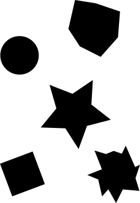
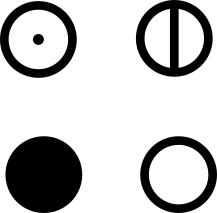
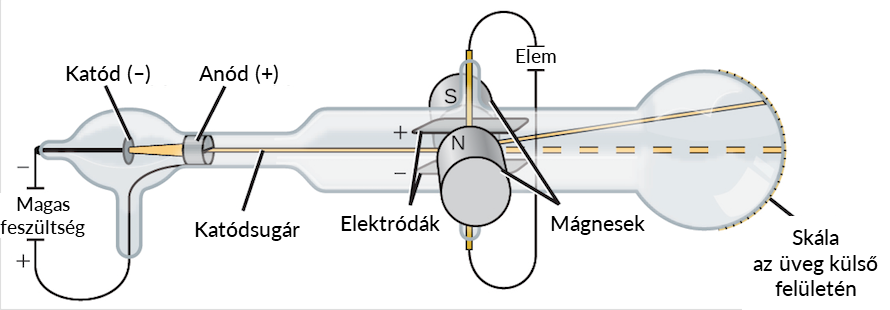
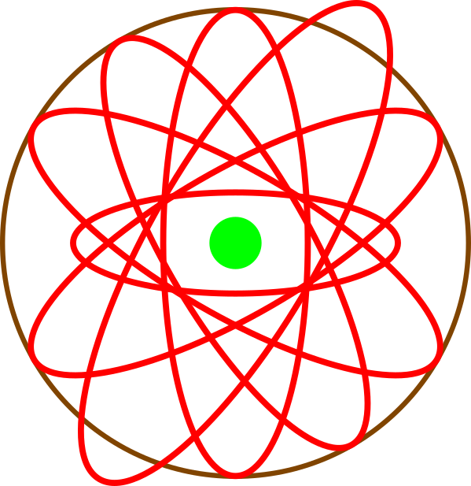
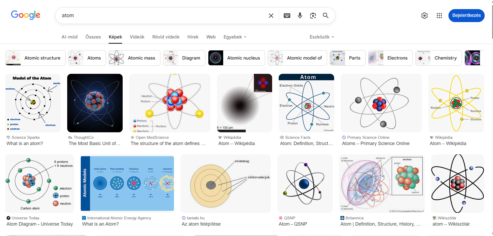
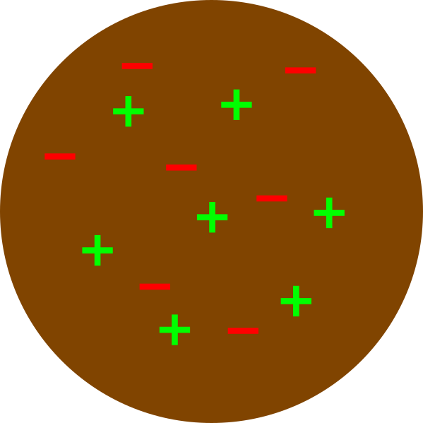
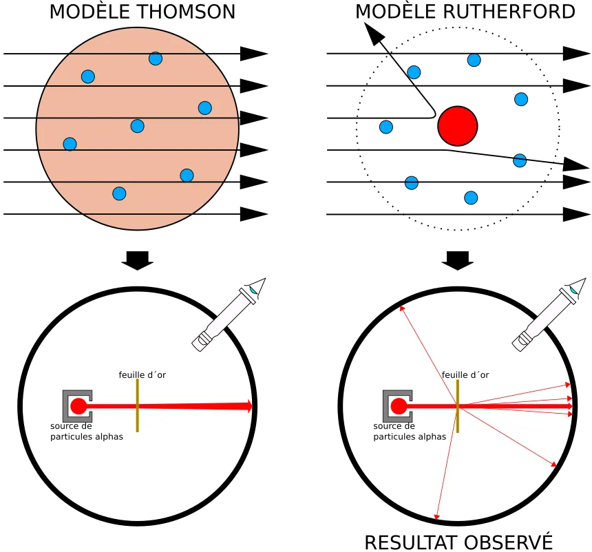

A természettudományos modell segítségével előre tudjuk jelezni a dolgok működését, viselkedését. Amíg a mérések ezekkel összhangban vannak, vagyis a modell azt jósolja, amit mérünk, az adott modell helyesnek tekinthető. Az atom belső szerkezetének megismerése hosszú folyamat volt. A kísérleti eredmények alapján a kutatók újra és újra átértékelték elképzeléseiket. Ebben a leckében végigkísérjük ezt a fejlődést a kezdetektől a modern kvantummechanikáig.
A homokszem széttöréséből feltételezte, hogy az anyag apró, tovább már nem osztható részekből épül fel. Mivel az oszthatatla szó görögül atomosz, ezeket a részecskéket ma is atomoknak hívjuk. Részletes magyarázat és kép

A rekaicók magyarázatául feltételezték, hogy minden anyag négy őselem meghatározott arányú keverékéből áll. Ezek a tűz, a víz, a föld és a levegő. Részletes magyarázat és kép
John Dalton szerint az atom egy tömör, oszthatatlan gömb. Az azonos elemek atomjai azonos tömegűek és azonos tulajdonságúak.
Dalton feltételezte, hogy a kémiai reakciók során az atomok nem jönnek létre és nem semmisülnek meg, csak átrendeződnek. Bár ma már tudjuk, hogy az atom osztható (elektronok, protonok, neutronok), ez a modell fektette le a modern kémia alapjait.
Proust, egy francia tudós fektette le az állandó súlyviszonyok törvényét, amiben leírta, hogy az anyagok mindig azonos tömegarányok szerint reagálnak egymással. Például, ha fix mennyiségű vasat reagáltatunk kénnel, mindig ugyanannyi kén fog ezzel a mennyiségű vassal reagálni. Berthollet, egy másik francia tudós írta le a többszörös súlyviszonyok törvényét. Vannak anyagok, amelyek nem csak egyféle arányban reagálhatnak. Ilyen például a szén és az oxigén: a reakciójukban keletkezhet szén-dioxid és szén-monoxid, az oxigén mennyiségének függvényében. Ezek az arányok mindig két kis egész szám arányai voltak, tehát például 1:2 vagy 2:3 arányban reagáltak az anyagok, soha sem 397:522 arányban.
A fentiek alapján Dalton írta le, hogy az anyagoknak atomokból kell állniuk, amelyek a kémiai reakciók során megmaradnak, csak kapcsolódásuk változik meg.
Amiben többet mondott, mint az ókori atomelmélet, az az, hogy ő már nem fa-atomokról, levegő-atomokról stb. beszélt, hanem kémiai elemek atomjairól. Fontos megjegyezni, hogy az atom felépítését nem ismerték ebben az időben, ezért pl. azt sem tudták, hogy elemmolekulák vannak. A kén és az oxigén pl. Dalton szerint 1:1 arányban elegyedik, mert az oxigén kétatomos molekuláiból pontosan egy kell a kén-dioxidhoz.

J. J. Thomson a katódsugárzással végzett kísérletei során felfedezte az elektront. Megállapította, hogy minden atomban megtalálható és negatív töltésű. Precíz méréseivel még a töltését és a tömegét is jó pontossággal tudta megbecsülni. Innentől tudjuk, hogy az atom nem oszthatatlan. Thomson még úgy gondolta, hogy az atom homogén, abban egyenletesen helyezkednek el a pozitív és negatív töltésű részecskék, mint a kuglófban a mazsolák, vagy ahogy ő mondta, a pudingban a mazsolák. Én nem teszek mazsolát a pudingba, de te tegyél nyugodtan.
Thomson a kor új találmányával, a katódsugárcsővel kísérletezett. Itt egy üvegcsőben vákuumot készítenek, majd az egyik felére, egymástól kis távolságra két fémet helyeznek el. Úgy kapcsolnak rá feszültséget, hogy amelyik közelebb van a végéhez, az legyen a negatív pólus. Egy bizonyos feszültség fölött az áramkör zár, mert a negatív pólusról töltött részecskék lépnek át a vákuumon keresztül a pozitív irányába. Ha a pozitív pólusra (anód) lukat vágnak, akkor ezen egy kis, irányítható nyalábban átjutnak a töltött részecskék. Távolabb, a rajzon kb. középen, elemek és mágnesek segítségével lehet precizen irányítani, hogy a nyaláb merre haladjon tovább: a töltés eltéríti azt. Az üvegcső távolabbi részét fluoreszcens anyaggal vonják be, ami felvillan, ha töltött részecske éri. A régi, fekete-fehér tévék, monitorok ezt használták. Ezek még tényleg károsak voltak a szemre, mivel a töltött részecskék kijuthatnak belőle, és roncsolhatják az ideghártyát. A mai (értsd: az elmúlt kb. 35 évben forgalmazott) készülékek már teljesen más elven működnek, itt nem áll fenn ez a veszély.
Thomson kimutatta, hogy a sugárzás a katód anyagától függetlenül, mindenféle fémet használva pontosan ugyanolyan részecskékből állt. A részecskék töltése és tömege is megegyezett. Ebből következtetett arra, hogy az atomok azonos részecskékből épülnek fel, amelyeknek egy része negatív töltésű. Mivel a részecske elektromosan töltött, azt elektronnak nevezte el.

Kattints ide a puding-modell ábrájához!


Rutherford vékony aranyfóliát bombázott pozitív töltésű alfa-részecskékkel (ekkor még nem tudták, de ezek 42He atommagok). Azt várta logikusan, hogy (amennyiben Thomsonnak igaza van) a részecskék alapvetően visszapattannak majd, mint a golyók a falról. Aztán, ahogy egyre nagyobb energiával lövi ki őket, egyszer csak már át tudják szakítani az aranyfóliát. Meglepődve tapasztalta, hogy:
Következtetés: Az atom közepén található az atommag, körülötte pedig, mint a bolygók a Nap körül, keringenek az elektronok.
Nézd meg a szórási kísérlet vázlatát!
Niels Bohr továbbfejlesztette a modellt, hogy megmagyarázza, miért nem zuhannak az elektronok a magba.
Bohr szerint az elektronok csak meghatározott távolságú pályákon (energiaszinteken) keringhetnek.
Heisenberg és Schrödinger munkássága alapján ma már nem "pályákról", hanem atompályákról beszélünk.
Heisenberg-féle határozatlansági reláció: Nem határozható meg egyszerre pontosan az elektron helye és sebessége.
Az elektronnak kettős természete van: részecske és hullám. Az atompálya az a térrész a mag körül, ahol az elektron megtalálási valószínűsége 90% feletti. Ezeket a pályákat matematikai hullámfüggvényekkel írjuk le.
Atompályák (s, p, d) formái
Melyik tudós fedezte fel az atommagot a szórási kísérlet segítségével?

